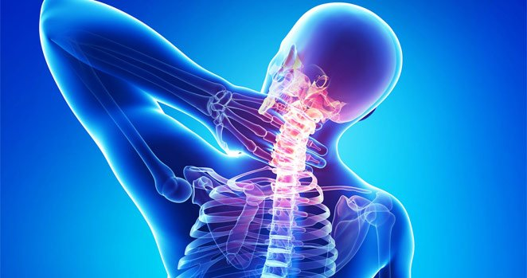
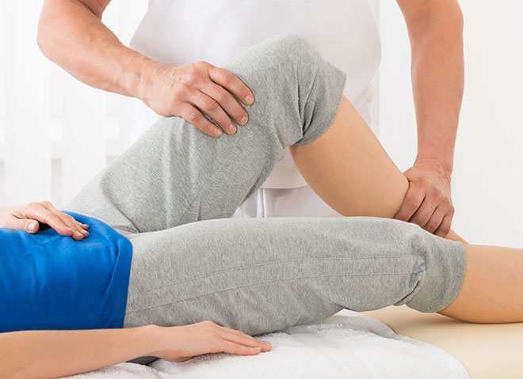

Ediție specială „Sănătatea ta” cu Sorin Micu
„Revoluție în medicină: O cremă pentru regenerarea încheieturilor.”De la editor O persoană din opt suferă de boli degenerative de disc, diverse boli ale articulațiilor (artroză, artrită, sciatică). S-ar putea spune că nu e o fatalitate, dar ... Înseamnă sfârșitul vieții de calitate pentru cei care suferă din cauza lor chiar în stadiile inițiale ale acestor boli. Ulterior, din cauza mobilității limitate, apar problemele asociate, cum ar fi hernie, tulburări metabolice și probleme de mobilitate. Subiectul nostru de astăzi va fi modul în care poți scăpa de problemele sistemului musculo-scheletic și să-ți recapeți sănătatea!
Bună, dragii mei prieteni!
Mulți ani, am apărut pe ecrane vorbind despre probleme ale încheieturilor. Bolile care au legătură cu încheieturile sunt foarte des întâlnite. Forte multe lucruri s-au spus despre metodele de tratament al încheieturilor! Este o problemă care se tratează medicamentos sau prin intervenție chirurgicală. În emisiunea noastră vorbim adesea despre proceduri chirurgicale sau tratamente medicamentoase, dar vorbim și despre tratamente alternative, destul de rar. Nu sunt doar rețete de la bunica. Au fost recunoscute de către comunitatea oamenilor de știință, dar și de către publicul nostru. Azi vom vorbi despre colagen, cea mai importantă proteină din corpul uman. Împreună cu multe alte ingrediente este inclus în cel mai nou remediu - .
Deci hai să vedem cum aceste substanțe, care sunt parte din pot ajuta în cazul unor boli atât de grave? Dacă îți amintești, cu câteva apariții în urmă, pe lână alte subiecte, am vorbit despre cum să vindeci durerea încheieturilor. Trebuie să declanșăm procesul regenerării, și anume regenerarea celulelor până la starea lor inițială. După cum știți, în cele mai multe cazuri, în medicină tratamentele au consecințe. Oricum, esențial este să elimini rădăcina problemei și să readuci corpul la starea inițială. Din acest motiv, dacă se iau dozele corecte din anumite substanțe, care se regăsesc în acest medicament unic, majoritatea pacienților se simt eliberați sau chiar renăscuți. Mulți au simțit un surplus de energie și forță. Durerea dispăruse.
ajută să câștigi lupta cu boli nemiloase precum artrita, artroza sau bolile degenerative ale discului. reduce eficient inflamația și durerea în stadiile acute ale bolilor încheieturilor, cartilajelor sau ligamentelor. Studiile arată că există mai multe cauze ale deteriorării încheieturilor: circulație proastă, dietă nesănătoasă, viață sedentară, dereglări ale sistemului imunitar, schimbări hormonale sau deficiențe celulare. Cu alte cuvinte, întregul sistem are un impact direct asupra sănătății. Asta ajută cel mai eficient în lupta împotriva bolilor.
Deteriorare
a cartilajului
Slăbire
a ligamentelor
Inflamare
a membranei
sinoviale
Încheietură bolnavă
Poate vreți să știți cum funcționează. Să vă explic. are un ingredient special care stimulează producția de colagen în corp. Această cremă reface țesuturile conjunctive care sunt predispuse deteriorării. Întărește articulațiile, ajută corpul să asimileze nutrienții și reface procesul enzimatic la nivelul celulelor. mai are un efect pozitiv asupra sistemului cardiovascular: curăță vasele de sânge și îmbunătățește microcirculația.
În acest moment, există un singur site oficial al producătorului care vinde produsul original, și nu produse contrafăcute. Canalul nostru a furnizat multe informații despre acesta. Și nu e de mirare! Nu este doar o cremă. Este o combinație unică de substanțe naturale vindecătoare, dintre cele mai rare și mai puternice. Acest remediu s-a dovedit a fi eficient nu doar pentru pacienți ci și pentru știință, care a recunoscut crema ca fiind un medicament eficace. Conform testelor, durerea din încheieturi sau spate dispare după prima aplicare. Ideea principală este să urmezi strict instrucțiunile de utilizare!
Azi am invitat în studio o femeie pe nume Alina Niculescu, unul dintre miile de pacienți care au beneficiat de :
Alina Niculescu: „Am simțit îmbunătățiri în fiecare zi. Durerea din încheieturi a încetat foarte repede. Mai mult decât atât, am simțit o stare generală mai bună. Contribuie la vindecarea țesuturilor și accelerarea proceselor metabolice. Puteam mânca orice și puteam să alerg. Crema a devenit salvarea mea. Durerea dispăruse pentru totdeauna. Devenisem perfect sănătoasă. Cel mai important este că are un efect multilateral. Este ușor de utilizat, nu pătează hainele, ceea ce este foarte convenabil. Chiar mai important, conține doar ingrediente naturale. regenerează cartilajele prin stimularea producției de colagen, în timp ce medicii noștri folosesc termeni de neînțeles și încearcă să ne vândă medicamente scumpe, care nu sunt bune de nimic... eu știu pentru că am încercat de una singură.
Sorin Micu: „Alina, ne spui în detaliu cum se folosește acest remediu minune?”
Alina Niculescu: „Este foarte simplu! Ia o cantitate mică de cremă și aplic-o în zonele cu probleme, masând ușor până la absorbție. Poate fi comandată doar de pe site-ul oficial. Dacă vrei să o cumperi, trebuie să-ți completezi datele pe site și să lași un număr de telefon la care poți fi contactat pentru a discuta detaliile. Costurile sunt nimic pe lângă ce am cheltuit pe alt tratament! Datorită prospectului, totul este foarte ușor de înțeles. Am simțit îmbunătățiri după prima aplicare. Încearcă și tu și vei vedea.”
Sorin Micu: „Îți mulțumim pentru informații. Multă sănătate!”
După cum puteți vedea, drumul către sănătate nu este chiar atât de greu. poate fi comandat de pe site-ul oficial.
Comentarii
A fost ușor de comandat. Am primit în ziua următoare prin poștă. Am început tratamentul și voi reveni cu rezultatele. Mulțumesc, Sorin!
Pierdusem adresa site-ului, dar în sfârșit am găsit-o. Sunt emoționată să împărtășesc rezultatele. Face minuni. După o singură cură, toate problemele cu încheieturile au dispărut. Mă simt cu 20 de ani mai tânără! Mulțumesc .
Bună tuturor! Vreau să spun doar mulțumesc Sorin Micu! M-a ajutat! M-am simțit ușurată imediat. Durerea a dispărut. Starea de spirit mi s-a îmbunătățit și mă bucur iar de viață! Folosesc crema de 10 zile. Mulțumesc foarte frumos!
Rezultatele sunt foarte motivante. Începând de mâine, viața mea se va schimba cu puțin noroc. Am comandat și l-am primit prin poștă. Încep chiar acum! O abordare diferită. Nu-i ușor să fii geniu!”
Toată viața am suferit de boli degenerative ale discului și chiar sper că asta mă va ajuta. Am comandat!
L-am comandat de Ziua Tatălui, pentru tatăl meu. Este cu 25 ani mai în vârstă decât mine, dar după devansează tinerii! Îl folosesc și eu, mă simt grozav și nu provoacă dependență! :)
Bună. Informațiile sunt foarte interesante. Cu toate că sunt greu de convins, voi încerca! Nu renunț niciodată!
Acest remediu are multe recenzii pozitive. Un prieten de-al meu are o problemă similară. S-ar putea să-i recomand produsul…
Nu sunt sigur că acest Mă va ajuta….. Mă simt ca un schilod.
Am găsit articolul din întâmplare. Și ce văd!! Se vorbește despre al nostru ! Ei bine, nu e chiar al nostru, dar l-am comandat pentru soțul meu. El nu știe că scriu aici, dar vreau să-mi exprim entuziasmul. Pe scurt, am citit multe informații și am comandat produsul. Soțul meu își pierduse speranța. A luat medicamente, a făcut masaje, dar a obținut doar dureri de stomac și își pierduse speranța. Apoi… am început să folosim și wow! Gata cu problemele, a revenit la forma inițială, e bine dispus și activ din nou!
Soțul meu are artroză. Ne plimbăm de la un expert la altul. Îl iubesc și mi-aș da viața pentru el, dar nu-i pot alina durerea. Există speranță și pentru noi. Crezusem că am încercat totul.
Greu de crezut… dar multă lume spune că ar trebui să funcționeze. Încep mâine.